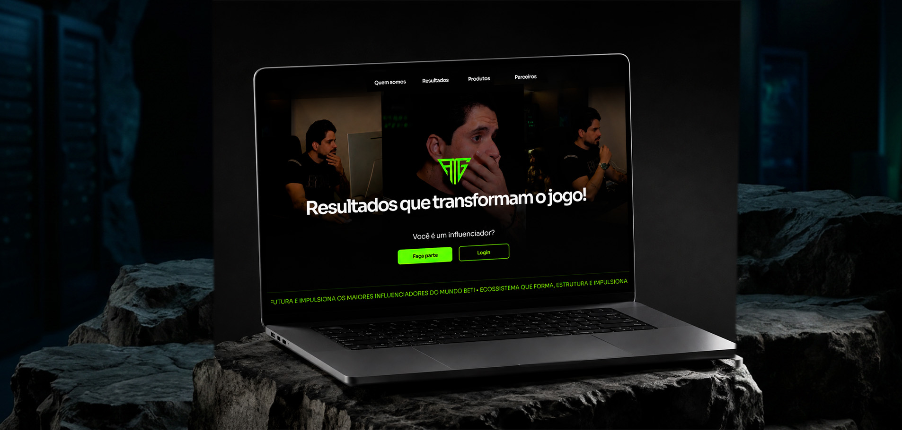

About the project
VIEW WEBSITE →Mansão Green is an iGaming brand, and this project was a complete restructuring of their website, rebuilt from the ground up on WordPress. The work focused on reshaping both structure and design, delivering a more modern, organized interface fully aligned with the brand identity — while making navigation clearer and more intuitive for the user.
I had full creative freedom over the redesign, with one constraint: staying true to the brand's visual identity. I took the original green and pushed it into a brighter, more fluorescent direction — a tone that preserves brand recognition while speaking the visual language of the iGaming world.
The result is a fully responsive site, built to adapt across all devices, with smooth transitions and a browsing experience that feels effortless from the first scroll.
Colors
- #131313
- #1D1D1D
- #9DFF00
- #FFFFFF
- #163421
Font
The project runs on two geometric sans-serifs, each with a clearly defined role. Sora is the primary typeface, carrying every headline and subheading across the site. Its geometric construction and subtly squared terminals give the interface a technological, contemporary edge that fits naturally into the iGaming context. It was applied with adjusted letter spacing, opening up the space between characters so titles breathe and gain a more refined, deliberate rhythm.
Poppins was chosen for the form fields, where the user actually types. Its rounded forms and tall x-height keep input text legible and comfortable at small sizes, and its neutral tone reinforces the hierarchy.
SORA
Aa Bb Cc Dd Ee Ff Gg Hh Ii Jj Kk Ll Mm
Nn Oo Pp Qq Rr Ss Tt Uu Vv Ww Yy Zz
0 1 2 3 4 5 6 7 8 9
! # $ % * & ? /
POPPINS
Aa Bb Cc Dd Ee Ff Gg Hh Ii Jj Kk Ll Mm
Nn Oo Pp Qq Rr Ss Tt Uu Vv Ww Yy Zz
0 1 2 3 4 5 6 7 8 9
! # $ % * & ? /